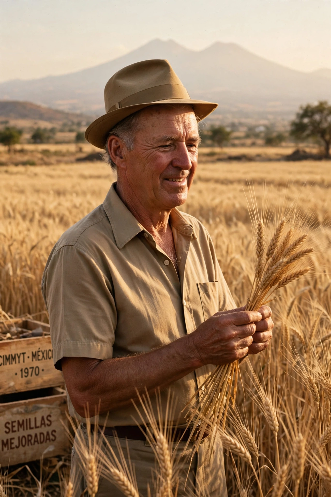

Norman Ernest Borlaug (25 March 1914 – 12 September 2009) was an American agronomist who led initiatives worldwide that contributed to extensive increases in agricultural production termed the Green Revolution. He is often called "the father of the Green Revolution" and is credited with saving over a billion people from starvation.

| Norman Borlaug | |
|---|---|
| Born | 25 March 1914, Cresco, Iowa, US |
| Died | 12 September 2009, Dallas, Texas |
| Field | Agronomy, plant pathology |
| Awards | Nobel Peace Prize (1970) |
From 1944 Borlaug worked in Mexico for the Rockefeller Foundation, breeding rust-resistant, semi-dwarf, high-yield wheat using shuttle breeding. Mexico became self-sufficient in wheat by 1956. In the 1960s his varieties were introduced to India and Pakistan during famine threats, dramatically raising yields. Later work extended to rice and to Africa via the Sasakawa Africa Association.
Borlaug received the Nobel Peace Prize, Presidential Medal of Freedom and Congressional Gold Medal. Critics note Green Revolution dependence on fertiliser (see Nitrogen fixation), irrigation and pesticides, and social effects, while supporters stress lives saved and land spared.